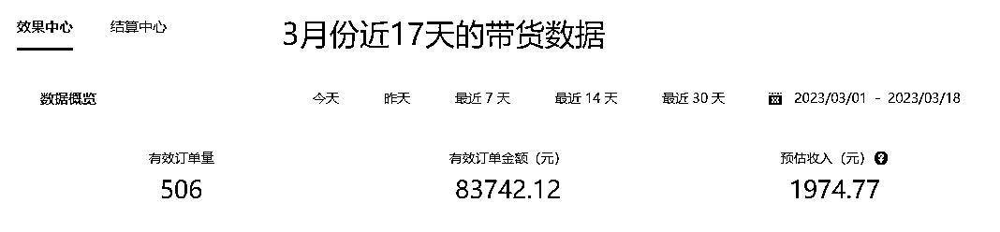
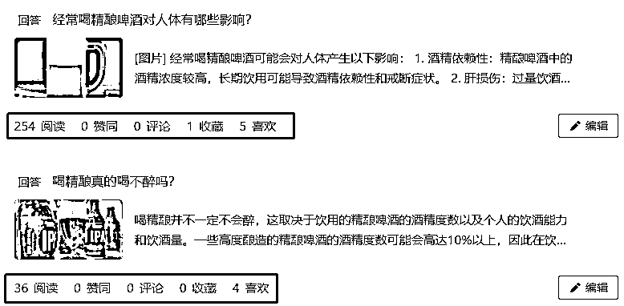
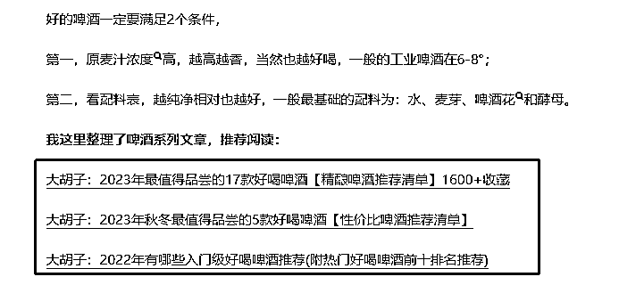
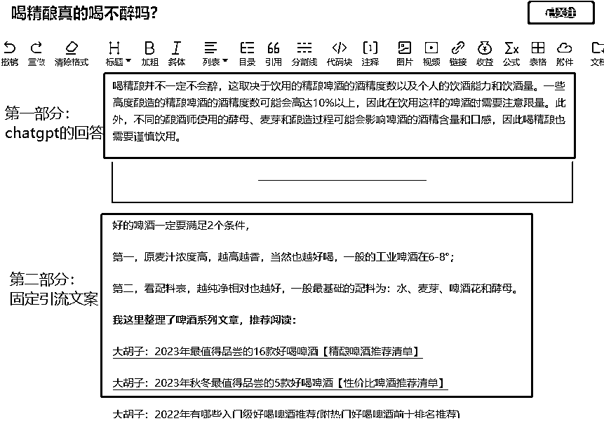
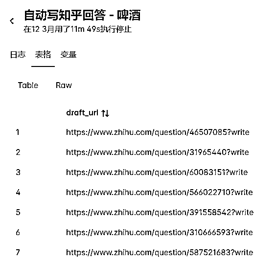
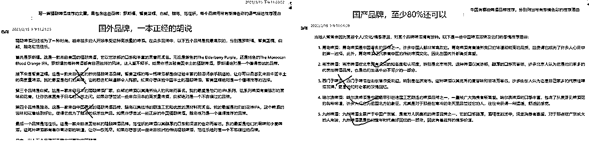
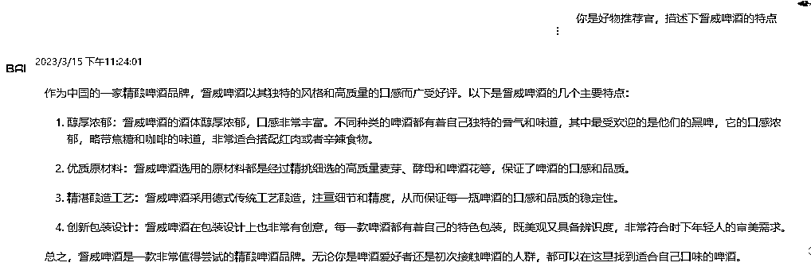
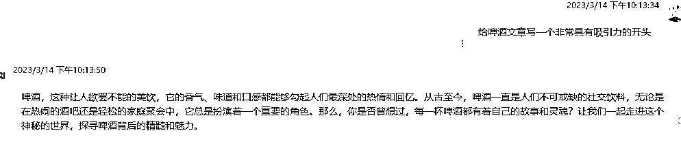
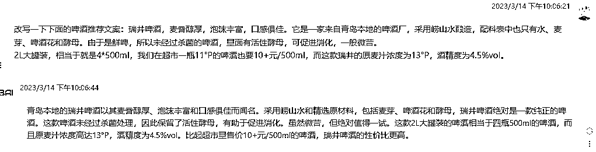

来源：https://aqoyanyhfa.feishu.cn/docx/GhbsdeUAeo0lWdxwqcecdwx0nuh
大家好，我是大胡子，目前在成都，正业是一名程序员。
自从进了生财副业就有挺多，唯一坚持时间长的就是知乎的好物推荐，大概是2020年进入生财，然后就陆陆续续尝试在做知乎好物推荐。
其实知乎好物的瓶颈就是创作，大力出奇迹，每一篇文章或回答接触用户就是一次曝光机会。
正好chatgpt横空出世，于是就想到用它来自动化创作，但仅作为辅助创作，它不会带来暴富，但可以满足副业的需求，下面是3月份收益

今天我不是教大家做知乎好物，我的主要目的分享下怎么通过chatgpt生成好物推荐的文章或者间接引流到好物推荐。
1、知乎账号8级，倾向于红酒/啤酒领域好物推荐（夏天冬天都能出货了）；
2、粉丝不多，就2000人，相信很多圈友都能很快达到这个粉丝量。
那就是通过chatgpt回答一些高流量的泛回答，此类回答一般竞争较小，但购物意愿度一般，例如下面2个回答

写此类回答的目的当然也是为了引流，至少用户群体差不多。引流到哪里呢，引流到我的爆款好物推荐文章，就像第一个回答

那么怎么让它自动回答这类问题？我这里有2点：
chatgpt的回答+固定尾巴（文案+链接）
看下面这个回答就能一目了然

如果说chatgpt是解决脑力问题，那么RPA就是解决劳动力的实际操作问题
我的做法是：挑选出自己觉得适合chatgpt回答的问题，存到草稿箱，然后rpa机器人自己挨个去回答即可，当然rpa机器人不会真正的提交，还是需要人工再次确认，加以润色才能发表。这差不多就完成了一个通过chatgpt自动卖货的最小闭环。

今天的主题是ChatGPT，所以RPA机器人咱们就不讲细节，很多工具都可以实现。
目前发现chatgpt推荐好物，问它中国的品牌，回答的会比较清楚，但国外品牌就有很多回答不了，特别是翻译的中文品牌名经常搞错。

由于上述清单中，可能有一些回答的很笼统，于是我们需要细化或强化推荐理由，那么我们可以单独问chatgpt该品牌
下面这个国外品牌虽然地域回答错了，但是推荐理由还是很详细的，可以直接使用：

我们再看下，让它给刚才的啤酒文章写一个有吸引力的开头

以下是我用过的一些特色推荐理由的提问词：
1、介绍一下范佳乐白啤的特色
2、范佳乐白啤获得过几次奖项，分别是哪些
3、给啤酒文章写一个非常具有吸引力的开头
4、写一篇推荐啤酒的文章，包含5款中国的精酿啤酒以及介绍下具体的推荐理由
如果你不会写文章，也不知道怎么写提示词，那就教你一个傻瓜式操作。
参考同行爆款文章，然后拿过来让chatgpt帮你改写。
下面这个是改写我之前创作的文案，重新生成了一个新的文案，改写之后基本逻辑都正确了，而且避免了抄袭。

总之，好物推荐的文章，很多是需要手动调优的，上面就是我这次航海上摸索总结的一些知乎好物推荐的经验，比较适合你已经了解某一行业产品，这样才知道ChatGPT是像认真回答的，而不是瞎编的。
最后祝圈友们早日上岸，加油~
小尾巴：
如果你时间更宝贵，可以联系 dahuzirpa
已有的机器人有：小红书发布、知乎回答、百家号动态